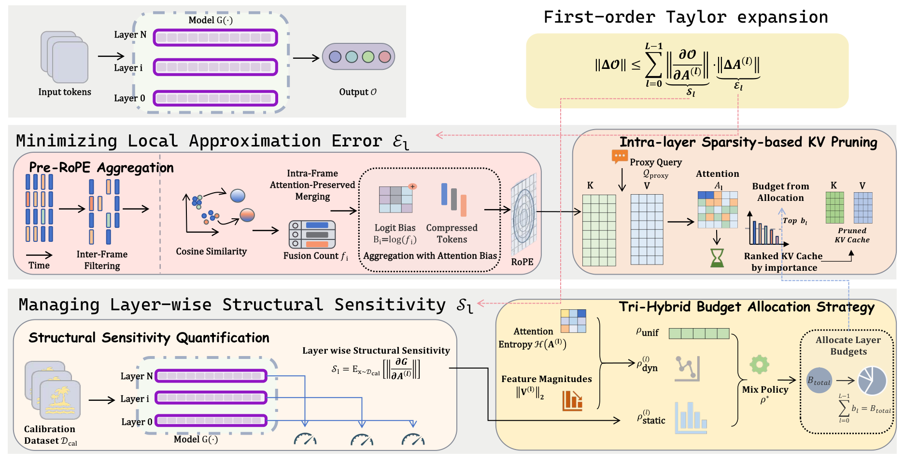

论文信息
| 作者 | Yonghui Niu、Yuhao Ji、Chang Nie、Jiao Zhang、Yilong Li、Junlan Feng、Ran He、Caifeng Shan、Chaoyou Fu |
|---|---|
| 机构 | 南京大学、中国移动研究院、中国科学院自动化研究所 |
| 一句话 | 以一阶 Taylor 误差分解同时决定“层内怎样压缩”与“每层保留多少 KV”，使流式 Video LLM 在固定缓存预算下保持长程理解能力。 |
1. 核心摘要
长视频流令多模态大模型的 Key-Value（KV）cache 随时间线性增长；只按 token 分数剪枝虽然节省显存，却忽略一个关键事实：相同大小的局部压缩误差经过不同 Transformer 层，可能对最终输出产生完全不同的放大效应。Video-MemComp 因而把 KV 管理写成受全局预算约束的误差控制问题，而不是仅做启发式 token eviction。
论文用一阶 Taylor 展开将输出误差上界拆为层内局部近似误差 𝓔ₗ 与层级结构敏感性 𝓢ₗ。前者由 pre-RoPE 的相似 token 聚合、注意力守恒 logit bias 与层内 KV pruning 降低；后者由离线梯度先验、在线 attention entropy 与 feature magnitude 混合决定预算。Qwen2.5-VL-3B 在每层等效 6K token 时，整体分数由 full-cache 的 62.3 提升至 64.1，同时节省超过 90% KV memory；这说明有选择地遗忘冗余内容可能优于保留完整历史。
2. 研究动机
流式视频的瓶颈不只在长度，还在误差累积
视频帧进入视觉编码器后会产生大量 visual tokens，Transformer 的每层都为历史 token 保存 K/V。若对无限流简单追加，显存、attention 计算和等待时间都会随视频时长上升。已有做法多根据注意力或局部相似度直接丢弃 token，但连续压缩会使近似误差累积，且一旦早层信息被错误删除，后续层可能将其放大。
“同样的 token 数”不是同样的风险
不同层扮演的功能并不相同。某些层的 attention 输出发生微小扰动，会在后续深层传播放大；另一些层则包含较高冗余。因此，固定地为每层分配相同 cache 容量并不符合模型结构。作者将这一现象称为 layer-wise structural sensitivity，并提出让全局预算向高敏感层倾斜。
RoPE 使得事后合并不再几何可靠
RoPE 把位置信息旋转进 Q/K 表示。同一语义、不同位置的 token 在 post-RoPE 空间未必仍能通过相似度安全合并；直接在 cache 中聚合会引入几何失真。因此本文把 token aggregation 前移到 RoPE 之前的表示空间，并在合并后补偿 attention 的 logit 偏移。
3. 方法论

原论文 Figure 1。上方以一阶 Taylor 展开连接局部误差与层级敏感性；中部执行 pre-RoPE 聚合和层内 pruning；下方以离线敏感性与在线信息密度共同分配层预算。
3.1 用 Taylor 展开把缓存压缩拆成两类误差
令第 l 层历史 KV 为 𝓗⁽ˡ⁾，压缩算子为 𝒯，整个模型从所有层缓存映射到输出 𝒪=G(𝓗)。压缩带来的 attention 偏差写作 ΔA⁽ˡ⁾。论文以一阶近似得到：
||Δ𝒪|| ≲ Σₗ ||∂G/∂A⁽ˡ⁾|| · ||ΔA⁽ˡ⁾|| = Σₗ 𝓢ₗ · 𝓔ₗ。
𝓔ₗ 是本层合并与剪枝损失造成的局部近似误差；𝓢ₗ 衡量这一层误差对最终输出的放大系数。该式不是对离散 pruning 的精确等式，而是指导压缩决策的可计算代理：先在每层降低 𝓔ₗ，再把更多预算给高 𝓢ₗ 的层。
3.2 层内：pre-RoPE aggregation 与 attention-preserved merge
每个新视频片段首先进行 inter-frame filtering：与前一帧表示足够相似的 token 被视为时间冗余，动态 token 继续进入后续流程。对单帧内部的空间冗余，模型在注入 RoPE 前按 cosine similarity 选择可融合 token。聚合后的 token 记录 fusion count fᵢ，并加入 Bᵢ=log(fᵢ) 的 logit bias；其意图是让一个合并 token 在注意力中近似保留原来多个 token 的总 attention mass，而非因数量减少被系统性低估。
随后，proxy query 对该层 K/V 打分；在该层获得的预算 bˡ 内，只保留重要度最高的 KV 对。这里的顺序很重要：先在没有位置旋转干扰的空间做安全聚合，再做稀疏 cache 剪枝，以同时去除空间、时间冗余。
3.3 层间：敏感性与信息密度混合的预算分配
离线阶段，作者在代表性校准集上统计 𝓢ₗ=E[||∇A⁽ˡ⁾||]，形成结构敏感性的静态先验。在线阶段则计算 attention entropy 和 value feature magnitude：高 entropy 表示注意力更分散、压缩更困难；较大 feature magnitude 表示激活较强。两者组合为输入相关的动态信息密度项。
每层的预算比例由 uniform regularization、静态敏感性项、动态信息密度项加权混合：ρ⁽ˡ⁾=λᵤρunif+λₛρstatic⁽ˡ⁾+λₑρdyn⁽ˡ⁾，并满足 Σₗbₗ=Btotal。uniform 项防止低分层被饿死；静态项保证对结构敏感层的稳定保护；动态项使预算随当前视频内容变化。
3.4 流式推理时的状态更新
每个新片段到来后，系统先过滤跨帧静态内容，再把保留 token 经视觉/语言模型编码，并更新逐层 cache。层内聚合、重要度排序与层预算 pruning 持续发生，因此 cache 大小被锁定在总预算附近，内存增长对视频长度呈近似常数。论文将方法设计为 training-free、model-agnostic；但结构敏感性仍要预先离线校准，不能简单理解为完全无先验。
4. 实验与结果
设置。离线评测覆盖 VideoMME、MLVU、EgoSchema；流式评测使用 RVS-Ego、RVS-Movie 以及 OVO-Bench。论文在 Qwen2-VL-7B、Qwen2.5-VL-3B、LLaVA-OneVision-7B、InternVL-3.5-2B 上比较 full cache、ReKV、InfiniPot-V、StreamMem 等方法。
| 条件 | 对照 | Video-MemComp | 解读 |
|---|---|---|---|
| Qwen2.5-VL-3B，平均 6K KV / 层 | full cache：62.3 | 64.1 | 在严格预算下，去除冗余可同时降低 attention 干扰与显存。 |
| Qwen2-VL-7B，平均 6K KV / 层 | InfiniPot-V：64.7；full input：64.9 | 65.5 | 表明策略并非只在一个模型尺度有效。 |
| RVS-Ego / Movie，平均 accuracy | StreamingTOM：55.8 | 56.6 | 在 GPU 预算受限的流式设定中优于所列内存高效方法；CPU-offload ReKV 的 59.0 属于不同资源条件。 |
| LLaVA-OneVision-7B，RTX A6000 | ReKV：22.95 GB，TTFT 0.0846 s | 16.74 GB，TTFT 0.0302 s | 显存和首 token 延迟下降，但吞吐为 27.58 tokens/s，低于 ReKV 的 35.61。 |
关键消融。在 VideoMME 的阈值 0.75 下，static uniform allocation 的 aggregate 为 61.17，dynamic allocation 为 61.23；阈值 0.90 下为 61.00 对 61.53。提升存在但与阈值、视频长度有关。论文也显示适量动态项有效，过强依赖在线指标会因激活波动降低稳定性。
5. 优势与局限
| 优势 | 局限与迁移注意点 |
|---|---|
|
|
6. 总结
Video-MemComp 的核心贡献是把“保留哪些 KV”拆为两个正交问题：本层如何以最小失真压缩，跨层如何按误差放大风险分配预算。它不依赖已知 query，因而适合作为长程 VLA 历史缓冲的底座。
对历史关键事件检测而言，本文尤其值得与事件模块组合：事件检测可提供 token/片段级任务重要性，Video-MemComp 则提供层级预算与压缩的原则。前者决定何时 commit，后者决定同一条历史在不同层应保留多少表征；二者合用比单纯按时间或 value norm 管理 cache 更有机会兼顾控制实时性与长期可回忆性。